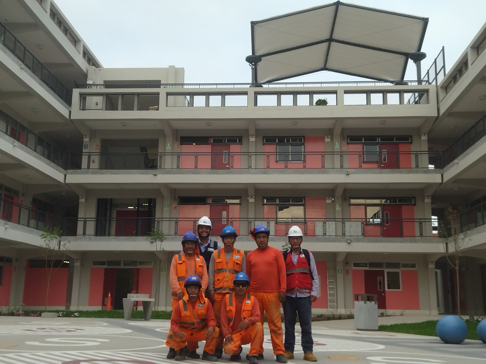
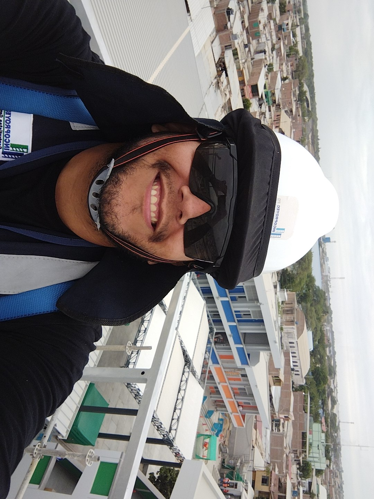
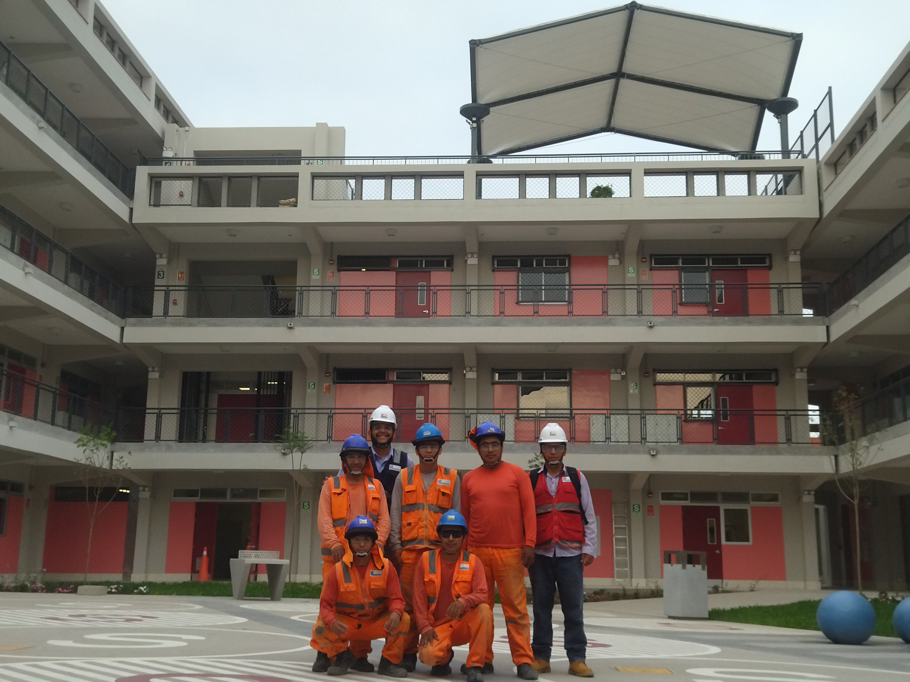
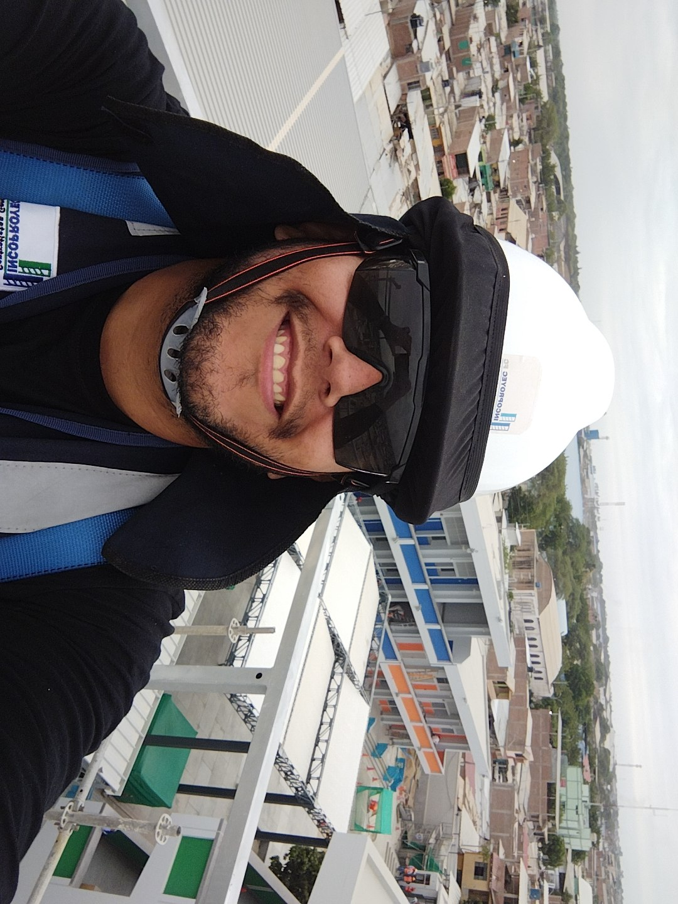
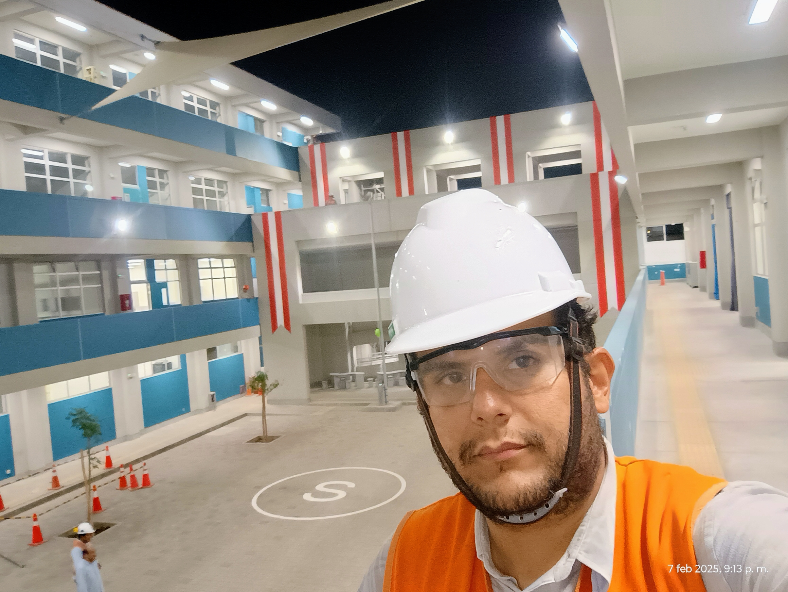
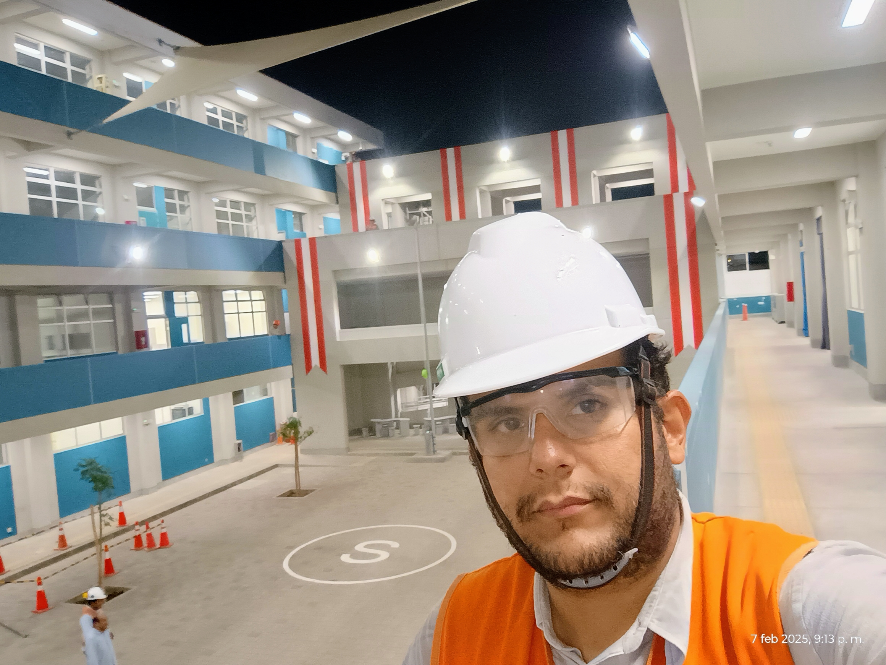

Sobre mí
Ingeniero Civil colegiado con sólida trayectoria en ejecución, supervisión y gestión de proyectos de infraestructura pública y privada, incluyendo obras de edificaciones, redes sanitarias, drenaje pluvial y proyectos PEIP en Lima, Perú. Comprometido con la calidad, seguridad y optimización de recursos, aportando soluciones técnicas innovadoras y cumplimiento estricto de normativas vigentes.
Perfil completo en LinkedIn: Ver perfil profesional
Experiencia
- Residente de obra – PEIP Educación (2023 – Actual).
- Asistente de residente – Empresa XYZ (2021 – 2023).
- Ingeniero de apoyo – Proyectos de infraestructura urbana y redes sanitarias en Lima (2018 – 2021).
Proyectos destacados
Construcción de IE Jorge Basadre – Sistema de drenaje pluvial y redes sanitarias bajo norma IS.010.
Mejoramiento de redes de agua potable – Instalación de redes de distribución y accesorios metálicos en exteriores.
Implementación de infraestructura educativa PEIP – Supervisión integral y coordinación técnica.
Galería de proyectos
 



 


Habilidades técnicas
- Planificación y control de proyectos con MS Project
- Diseño y revisión de planos en AutoCAD y Revit
- Aplicación de normativas peruanas RNE e IS.010
- Gestión de costos, presupuestos y metrados
- Supervisión y control de calidad en obra